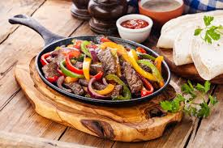

Easy Fajita and Marg Night
Looking for an easy recipe for a fun Mexican styled dinner? Look no further, on the menu we have chicken fajitas (substitute for any meat you would like), mango margaritas (also substitute for any fruit you'd like) and mango salsa! Get ready for a yummy dinner that friends and family will love.
Fajita

Ingredients
1/2 c. plus 1 tbsp. extra-virgin olive oil
1/4 c. lime juice, from about 3 limes
2 tsp. cumin
1/2 tsp. crushed red pepper flakes
1 lb. boneless skinless chicken breasts
Kosher salt
Freshly ground black pepper
2 bell peppers, thinly sliced
1 large onion, thinly sliced
Tortillas, for serving
Directions
- In a large bowl, whisk together 1⁄2 cup oil, lime juice, cumin, and red pepper flakes. Season chicken with salt and pepper, then add to bowl and toss to coat. Let marinate in the fridge at least 30 minutes and up to 2 hours.
- When ready to cook, heat remaining tablespoon oil in a large skillet over medium heat. Add chicken and cook until golden and cooked through, 8 minutes per side. Let rest 10 minutes, then slice into strips.
- Add bell peppers and onion to skillet and cook until soft, 5 minutes. Add chicken and toss until combined. Serve with tortillas.
Serves 6 | 15 Minute Prep | 1 Hour Total
Margarita

Ingredients
1 and 1/2 ounces tequila
1/2 ounce triple sec (or orange liquor of choice)
1/2 cup of mango juice
Juice of half a lime
1 cups ice
Margarita Salt
Directions
- Pour tequila, triple sec, mango juice, lime juice and ice into cocktail shaker.
- Put margarita salt on a plate, wet rim of glass and spin the top of the glass in the salt to coat evenly. Tajin can be used too.
- Shake ingredients then pour over ice into glass.
Serves 1 | 5 Minute Prep | 5 Minutes Total
Mango Salsa

Ingredients
3 ripe mangos, diced
1 medium red bell pepper, chopped
½ cup chopped red onion
¼ cup packed fresh cilantro leaves, chopped
1 jalapeño, seeded and minced
1 large lime, juiced (about ¼ cup lime juice)
⅛ to ¼ teaspoon salt, to taste
Directions
- In a serving bowl, combine the prepared mango, bell pepper, onion, cilantro and jalapeño. Drizzle with the juice of one lime.
Using a large spoon, stir the ingredients together. Season to taste with salt, and stir again. For best flavor, let the salsa rest for 10 minutes or longer.
- Serve as a side dish or on top of fajitas.
Serves 3 Cups | 15 Minute Prep | 15 Minutes Total